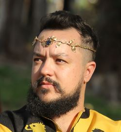

Lucas Fantinatti
Desenvolvedor Frontend Júnior


Sobre
Oi! meu nome é Lucas, seja bem-vindo(a)!
Sou uma pessoa apaixonada pela programação desde que eu tinha 15 anos. Sempre tive o sonho de trabalhar com programação e atualmente comecei a colocar esse sonho em prática estudando HTML, CSS e JavaScript. Gosto muito de café (até demais), e meus principais hobbies são jogar MMO RPG, ver animes e séries.